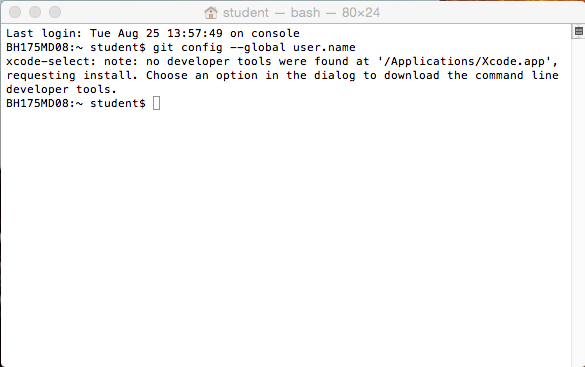
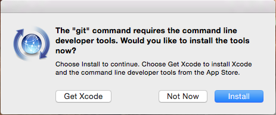
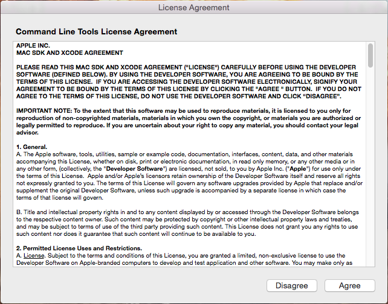
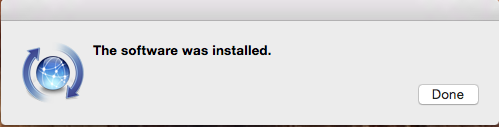
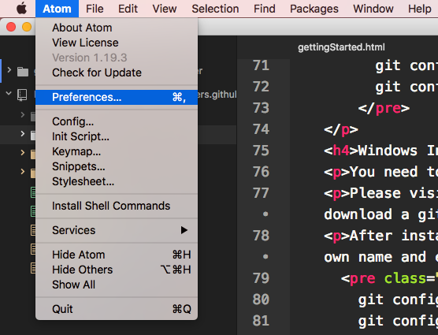
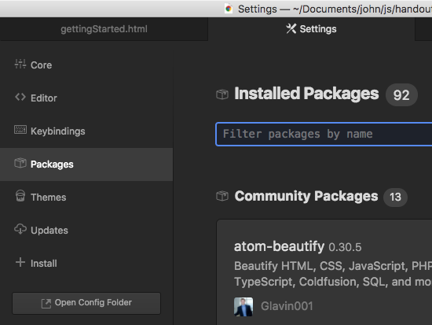
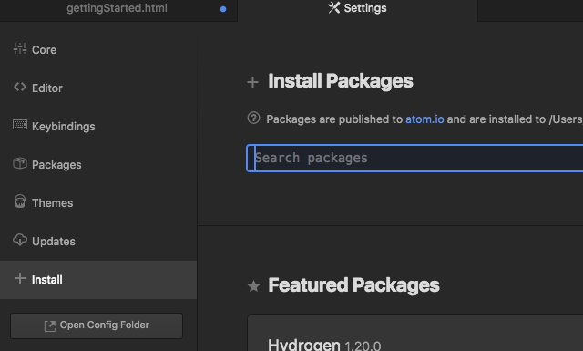

A few of these steps are not necessarily order dependent, but you will want to come up with a system that you follow. Individual computers may require additional steps to get all set up. Fortunately, if it is your personal laptop or home machine, you will have to do most of these steps only once. I will focus on those first as they get your environment ready to work.
Launch terminal and enter the following code using your own name:
git
We installed XCode in the H155 lab. That installed git (more specifically the command line tools for version control). If you use other computers on campus or if you use own computer you will most likely receive the following prompt when you try to use git from terminal:
And this dialog will appear:
You have the choice to download and install XCode (about 4 gigs of download so be careful) or you can install the command tools. Unless you plan to use XCode go with the other option. Agree with the license after the download.
Enjoy the successful install of the tools.
Enter the following code using your own name and email:
git config --global user.name "Your Name"
git config --global user.email "You@mail.com"
You need to install git and configure it with your git profile.
Please visit https://git-for-windows.github.io/ to download a git bash client for Windows. Download and perform a standard installation.
After installation inside the command prompt (terminal) you will set up your git config with your own name and email:
git config --global user.name "Your Name"
git config --global user.email "You@mail.com"
Start git user setup by launching terminal. Enter the following code using your own name and email:
git config --global user.name "Your Name"
git config --global user.email "You@mail.com"
The code editor we will use is Atom. You will download and install it from https://atom.io/. Atom is an awesome multi platform code editor. Download and install on your machine of choice.
One part of what makes Atom so awesome is the ability to customize it with packages. The packages we have added in the lab include:
To install packages, click on the Atom pull-down menu and select preferences
Click on Packages to see what packages are currently installed.
Click on Install and then type the name of the package you wish to install into the search bar. Then click Install for the package you want to install. Sometimes it will require a restart of Atom, but most times your new package will be available for use immediately from the Packages pull-down menu.
